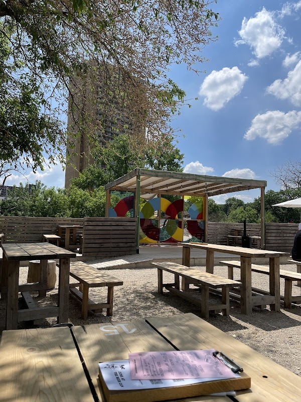

Three Winnipeg food festivals in August, compared

Winnipeg's summer eating happens outdoors and it happens late. The food festivals that matter cluster in August, after the Fringe has cleared out of the Exchange and before the evenings turn. In 2026 they fell on two weekends: StrEAT Feast took the middle of the month at The Forks, free and all ages, and then the third Saturday carried two ticketed events at once, the Tacos and Tequila Festival at the Goldeyes' ballpark and the Winnipeg Beer Festival across the river in St. Boniface.
Those three are not interchangeable. One costs nothing and welcomes a four-year-old. One will not let you through the gate under nineteen. One is a tasting that ends before most people have had dinner. Here is how they differ on the things that decide which you go to, with the 2026 figures as the most recent ones published; organisers reset dates and prices each spring.
What it costs to get through the gate
StrEAT Feast is free to enter. You pay the trucks and the booths, which means the day costs whatever you decide to eat and you can walk away having spent twelve dollars. In 2026 it ran four days at The Forks, August 13 to 16, opening at four in the afternoon on the Thursday, noon on the Friday and Saturday, and eleven on the Sunday, with a pop-up market, a kids zone, an eating challenge and a competition among the vendors.
The Tacos and Tequila Festival is the opposite arrangement. It is a single Saturday with a hip-hop bill, and the ticket is the price of the day. The Goldeyes announced early-bird pricing for the 2026 edition at $49 general admission and $115 VIP while supplies lasted; by the time the resale listings caught up, the numbers quoted were higher. Treat the early-bird figure as the floor and buy on the organiser's own site rather than an aggregator.
The Winnipeg Beer Festival sits between the two. It is a tasting rather than a meal, with more than twenty Manitoba brewers and distillers pouring, and the samples are included in the ticket rather than bought one at a time. The 2026 event was the ninth.
Which of them you can bring children to
Only one. StrEAT Feast runs a kids zone, costs nothing at the gate and is held on open grass, which is the combination that makes a four-day festival survivable with small children: you can leave after forty minutes and come back the next afternoon having lost nothing.
Tacos and Tequila is eighteen and over. Not "children discouraged", not "accompanied minors". The gate turns them away. The beer festival is a liquor-service event in an enclosed patio and is no different in practice. If you are travelling with children and you are in Winnipeg for the third weekend of August, the honest answer is that the food festival on that Saturday is not for you, and the better plan is the free programming at The Forks, which runs most of the summer anyway.
Blue Cross Park, The Forks and Provencher Boulevard
The three venues sit in three different parts of the city, and two of them are easy without a car.
The Forks, at 1 Forks Market Road, is the simplest. Route 38 Salter runs in seven days a week and the on-site stop is #10907. The festival grounds are the CN Stage and Field, the open ground south of the market buildings, so you walk in past the market rather than hunting for an entrance.
Blue Cross Park, the Goldeyes' ballpark at 1 Portage Avenue East, is at the far east end of Portage, two short blocks from Portage and Main, which is where most downtown routes converge. It is a baseball stadium being used as a concert ground, so the field is open and the seating bowl is above it.
Le Patio 340, the beer festival's venue, is at the Centre culturel franco-manitobain, 340 Provencher Boulevard, over the Provencher Bridge on the St. Boniface side. That is the one that catches visitors out: it reads as downtown on a map and it is a river crossing away. Winnipeg Transit's full fare was $3.45 in cash, exact change, or $3.10 on peggo e-cash, with a ninety-minute transfer, which covers the crossing in either direction.
Sun, wind and the half past eight problem
All three are outdoors and none of them has much shade. A ballpark field in late August holds heat into the evening and offers nothing overhead; the grounds at The Forks have trees at the edges and almost none in the middle of the field. Bring a hat and a layer for after dark, because the prairie evening drops faster than the afternoon suggests.
The light matters for planning. On the third Saturday of August the sun sets in Winnipeg at about half past eight. A beer festival running five to half past nine therefore starts in full sun and finishes in the dark, and a ballpark concert that begins mid-afternoon spends its first hours in direct heat and its last under lights. If you burn, the afternoon is the part to plan around.
Doing both on the same Saturday
In 2026 the two ticketed events shared a date, and some people tried to do both. It is possible and it is not comfortable. The beer festival's window was five to half past nine; the ballpark doors opened in the early afternoon and the headline set was an evening one. Going from one to the other means the Provencher Bridge in both directions, and it means paying twice for an evening you will only half see.
Our suggestion, if the calendar repeats, is to pick by what you want the day to be. The tasting is a conversation with people who make the beer, and it is over in time for a proper dinner. The ballpark is a concert that happens to serve tacos. Those are different nights out.
Where to stay for a Winnipeg food festival weekend
Our three-bedroom home is in Crescentwood, south of the Assiniboine River and about ten minutes on foot north of Corydon Avenue, which gives you a second evening's worth of restaurants without going anywhere near a festival gate. The Forks is a ten-minute drive, 3.9 kilometres, and Portage and Main is nine minutes and the same distance, which puts the ballpark within a short walk of the end of that drive. The Centre culturel franco-manitobain is eleven minutes and 5.1 kilometres by car.
August is the busiest month in the Winnipeg calendar, with Folklorama running the first two weeks, so rooms go early for exactly the dates these festivals use. Our Airbnb listing shows what is open. If you are building a longer week around food, the brewery guide covers the taprooms that are open year-round, and Folklorama fills the evenings earlier in the month.
Before you go: All three festivals set their dates, venues and ticket prices fresh each year, and two of them have moved buildings in the past. Confirm at streatfeast.ca, goldeyes.com and the Winnipeg Beer Festival's own listing before you book travel around a date.